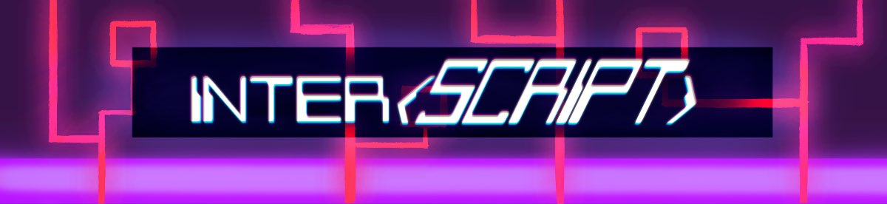

Welcome to Inter{Script}! You are a anti-virus robot, ultilizing a command-line interface to combat a computer virus invasion. You start out trapped in a tower, without many abilities. Your goal is to run, jump and collect abilities in this 2D platformer to defeat the viruses, navigate each room and escape! In order to use the abilities you collect however, you must type commands into your command-line interface to perform actions. This means you may have to act carefully, so that you have the time to run each command while not being destroyed by the viruses. Can you escape the tower?
This game was created as a group project for my 2nd year Game Design class in my university program. My group consisted of myself and three other friends who were new to using Unity. All the assets used in the game were our own original work. I was responsible for creating a lot of the art, most of the programming, and all of the music and sound effects in game. This game was also featured in the Queen's 2025 Creative Computing Showcase.
Want to play this game for yourself? Check it out on my itch.io page!
My group and I had create this game with a few things in mind, since we had created it for a 2nd year course. The first of which was that we had to try and finish this game within approximately 12 weeks while also keeping our other university courses in check. We originally had a lot more ideas in mind that we wanted to add to the game, but several factors got in the way of that. The second thing we had to do for our course was to include some form of 'novel' element into our game. This element had to be some unique aspect to our game that ideally hasn't been seen before in any other game. This element took us a little while to come up with, but we ended up with the idea of creating a game that centered around using a 'command prompt-like interface' to do essential actions in the game. This led us to create the command-line interface mechanic present in the final game.
Our original idea for our game was to have this game be more fast paced than what we ended up having. The idea was to use the command-line interface to type commands as quickly as possible to defeat enemies, navigate around the world, and to defeat bosses that would appear at the end of levels. After we had created a small prototype of this type of game, we had some other people try and playtest our game. We quickly realised that trying to type commands into the command-line interface as fast as possible proved to be a lot more limiting and difficult for people playtesting our game. We ended up deciding to try to pivot the gameplay of our game from being fast paced to being a slower paced game, where you have to ultilize commands more strategically, rather than as fast as possible.
As time went on however, we ran into a few issues while trying to create this game. The most detrimental of which was that our university course got effectively discontinued midway through our time in the course. This was due to an approximately month-long strike that occured at our university during our time in the course, which caused our course to be on pause until the strike ended (which didn't end up ending until after our exam period was over). This caused a lot of confusion with what was going to happen with our course at the time, which hindered our work on the project. We also realised that the rest of the courses that we had at this time (which were not canceled) had very heavy workloads, limiting the time we could put into the project as well. I even made a slight note of this in the final screen of the game.
Regardless of these issues, we ended up creating a playable project in time for a showcase happening at our university. It was a lot of fun and many people enjoyed the game we had put together. This game did have a few flaws. We only had time to create a single level without any boss fight, some of the enemies were slightly buggy and we ended up adding in much fewer commands than we had hoped to add. However this game was still a great introduction to my other group members into using Unity and game development in general. We had discussed the possibility of revisiting the project to try and improve it at a later date, but this may or may not happen.